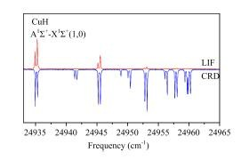

学好数理化走遍天下都不怕
A1∑+ State Lifetime and Predissociation of CuHDe-ping Zhang, Qiang Zhang, Bo-xing Zhu, Yang Chen* and Dong-feng Zhao*Chin. J. Chem. Phys: 2017 ,Issue 3,Page:243~246
A New kHz Velocity Map Ion/Electron Imaging Spectrometer for Femtosecond Time-Resolved Molecular Reaction Dynamics StudiesZhi-gang He, Zhi-chao Chen, Dong-yuan Yang, Dong-xu Dai, Guo-rong Wu* and Xue-ming YangChin. J. Chem. Phys: 2017 ,Issue 3,Page:247~252
Diffusion of Formaldehyde on Rutile TiO2(110) Assisted by Surface Hydroxyl GroupsDa-wei Guan, Rui-min Wang, Xian-chi Jin, Dong-xu Dai, Zhi-bo Ma*, Hong-jun Fan* and Xue-ming Yang*Chin. J. Chem. Phys: 2017 ,Issue 3,Page:253~258